RとQuartoではじめるデータサイエンス
#3 可視化(1)
![]()
0. 本日の目標
本日の目標
- ggplotの基本構造（data；aes；geom）を大まかに理解する
- 作図は「何を見たいのか」と「データの型」で決まることを理解する
- 変数の数とデータの型に応じて、適切なgeom_関数を選びながら図を作る（サンプルコード参照）
- 変数の数に応じて、可視化される情報量が異なることを直感的に理解する
- レポートのためのデータセットに触れてみる（宿題あり）
Ⅰ. 前回の振り返り
授業の感想
これまで情報が多い（複雑め）な方がプログラム的には分かりやすいようなイメージがあり、また情報を列にして見栄えを整えることがデータの正解だと思っていたが、コンピュータにとってはそれがかえって「不親切」になるという視点は、自分の中では大きな発見であった（宮園さん）
開始と終わりの・・や全角文字などエラーが出る理由は意外と簡単なものが多いことに気づいたので、そこを確認しながら進めていくことが大切だと感じた（山田さん）
授業の感想
コードはコピー＆ペーストができるので作業を短縮できるから。情報の授業でデータベースを触ったときは、データを抽出する度に結合なのか射影なのか、 選択なのかを入力しなければならず、例えば結合が 2 回続いたときは面倒に感じていた。そのため、and や｜を使うことができて便利だと思った（楠さん）。
もともと pythonをたしなんでいたので、Rは最初は全然知らないはずなのに、ちょっとの文字表記の差などはあっても、基本的文構造はほぼ同じだったのですごくとっつきやすく感じました。これからのコードも楽しみにしてます（寺西さん）。
言葉に書かれたものを、 R に指示するための表記に変える作業は難しいが、うまくできたときの達成感を感じることができたから。また、前回よりも Rの操作方法がわかってきたため面白いと感じた（吉田さん）。
演習問題③
- 解答例①：コードを積み重ねる
n
1 18演習問題③
- 解答例②： 少ない行数で書く
- ただし、
filter()とfilter_out()を使い分ける
- ただし、
penguins |>
filter(island == "Biscoe" & body_mass >= 3000 & sex == "female" & bill_len >= 25) |>
filter_out(species == "Gentoo") |>
count() n
1 18- このコードの方が何を残し、何を除外したのかが明確
- ミス防止に
前回の積み残し
- Ⅲ. データの抽出 > 欠損値から
Ⅱ. ggplot
ggplot
ggplot
- 公式サイト
- 透明なシート（レイヤー）を重ねて図を作る仕組み
- パッケージggplot2
- tidyverseパッケージに組み込まれているので、追加インストール不要
-
グラフィック文法にもとづく
- 文法に基づいたグラフィックス表現システム
見栄えの良いグラフを作るという非本質的な作業にユーザーに注力させるのではなく、データが本来持っている姿をグラフに反映させることを目指して提唱されているルール（Rによるオープン・データの可視化（2））
ggplot
3要素
- data（材料）
- aes（設計図）
- geom（描く）
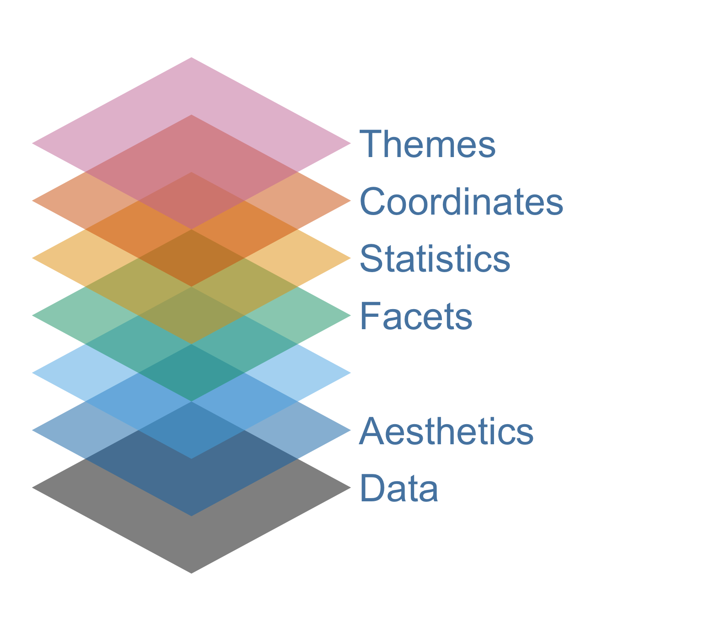
ggplot：3要素 > data（材料）
data（材料）
1. 元データ（行データ）
- 1行が1観測のデータ
- 例：1羽、1人など（penguins）
- 使える
geom_()：元データを集計する関数が組み込まれているもの-
geom_bar()（件数カウント）;geom_histogram()（分布）;geom_point()（散布図）
-
2. 集計済みデータ
- 平均・合計・割合などを計算した後のデータ
- 使える
geom_()：集計済みデータをそのまま可視化するgeom_col()
- 使える
ggplot：3要素 > aes（設計図）
aes（設計図）
- 美的マッピング（aes = aesthetic mapping）
- どのデータをどこに使うかというルール
- 全てのレイヤーに共通して適用される
ggplot：3要素 > geom（描く）
geom（描く）
- 実際に図を描く部分
- 複数重ねることができる（棒＋点＋線など）
- geom_〇〇という関数名をもつ
- ジオメトリ・幾何学（geometry）に由来。「ジィーム」
- たくさんの関数がある（公式サイト）
ggplot
-
+レイヤー演算子- グラフの要素を順番に重ねて追加する
- ggplotでは、図を「部品の重ね合わせ」として作るために使う記号
- パイプ演算子（
|>）が「処理の流れ」をつなぐのに対して、+は「図の構成要素を追加する」
penguins |>
drop_na(species, sex, body_mass) |>
group_by(species, sex) |>
summarise(avg_body_mass = mean(body_mass), .groups = "drop") |>
ggplot(aes(x = species, y = avg_body_mass, fill = species)) +
geom_col() + # 今回説明するのはここまで。以後の見た目に関わる説明は第5回目に説明予定
facet_wrap(~ sex) +
labs(
title = "ペンギンの種類ごとの平均体重",
x = "種類",
y = "平均体重（g）"
) +
scale_fill_paletteer_d("DresdenColor::briefcases") +
theme(
legend.position = "none",
plot.title = element_text(size = 14, face = "bold"),
axis.text.x = element_text(angle = 5)
)
ggplot
5 Named Graphs (5NG)
- 棒グラフ；ヒストグラム；箱ひげ図；散布図；折れ線グラフ
- ggplotでは他にも様々なグラフを作ることができるが、この授業ではこの5NGの習得を目標とする
ggplot
グラフの作り方：3つのポイント
- グラフの種類ではなく、どんな関係を見たいのかを考える（例：分布；比較；関係；推移）
- データの型（数値（離散；連続）；カテゴリ（名義尺度；順序尺度））を把握する
- 元データのまま可視化するのか；集計してから可視化するのか
試行錯誤の二つの留意点
1つ目は、何かを試すことには常に価値があるということです。たとえその結果何が起こるか完全にはわかっていなかったとしてもです。コンソールを怖がってはいけません。コードを使ってグラフを作るすばらしい点は、いったん壊したら元に戻せないような操作が含まれていないことです。もし何かがうまくいかなかったら、何が起きているかを特定し、それを修正し、そして作図コードをもう一度実行すればよいのです。
2つ目の点は、ggplotを使った作業の主な流れはいつも同じだということです。それは、テーブル型のデータから始め、位置・色・形といったグラフに表示される審美的要素に当たる変数をマップし、そしてグラフを描画するために1つか2つのgeom_関数を選ぶ、という流れです。コードの上ではこの流れは、まずデータとマッピングに関する基礎的な情報を持ったオブジェクトを作り、そこに必要な情報を重ねたり加えたりするというプロセスで実装されます。この作図法を一度身につけてしまえば、特に審美的要素のマッピングの指定とその継承方法が重要ですが、図を作るのが簡単になります（ヒーリー，キーラン (2021), 124ページ）。
見た目の調整
- ラベルや塗色の変更も重要だが、回を分けて紹介する
- 今回は必要最低限の範囲で簡単に言及する
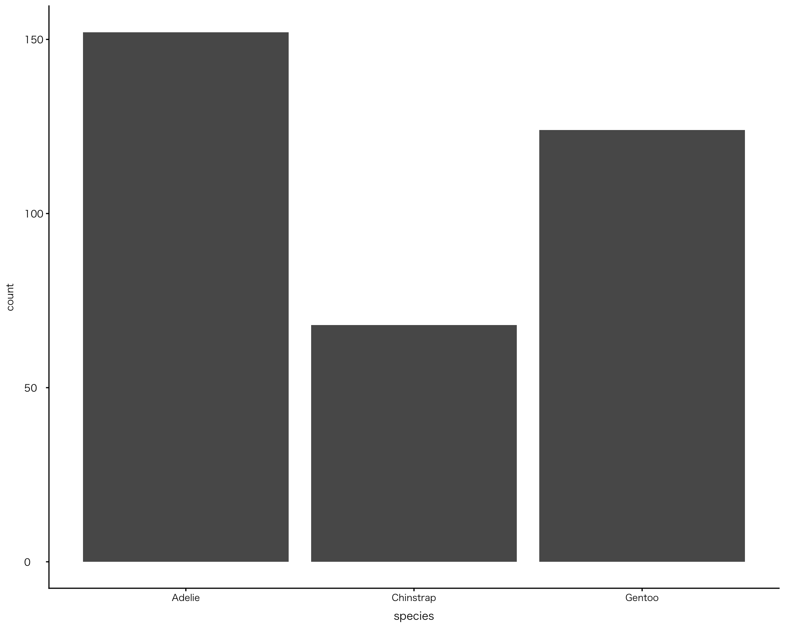
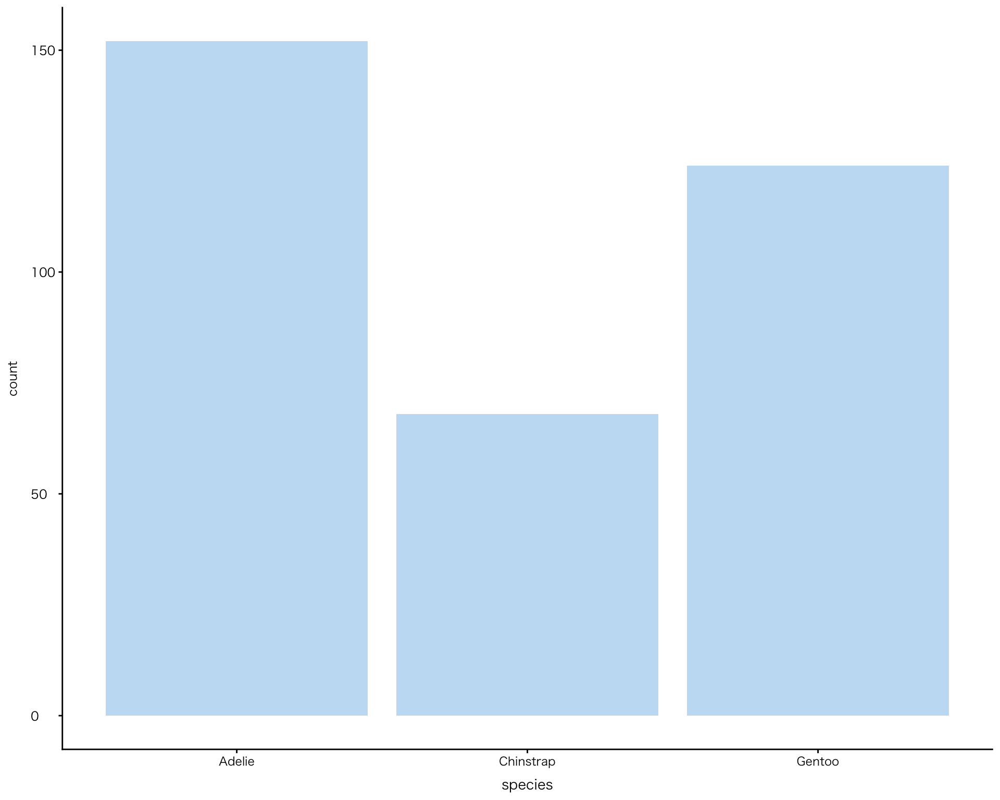
Ⅲ. 単変量（一変数）の作図
単変数：カテゴリ
棒グラフ
-
geom_bar()- xごとに件数を集計して棒の高さにする（自動カウント・元データを使用する）
- Cf. よく似た関数に
geom_col()がある 後ほど説明します- データフレームの列をそのまま使って棒の高さにする（元データを集計してggplotに渡すことが必要）
penguins |>
drop_na(species) |>
ggplot(aes(x = species)) +
geom_bar()
単変数：連続値
ヒストグラム
-
geom_histogram()- 数値の「分布」を見る
- 値を区間（ビン）に分けて数える
ビン区間（デフォルト）
penguins |>
drop_na(body_mass) |>
filter(species == "Adelie") |> # 複数の種を混ぜてプロットすると意味をとりにくくなるため、種を限定
ggplot(aes(x = body_mass)) +
geom_histogram()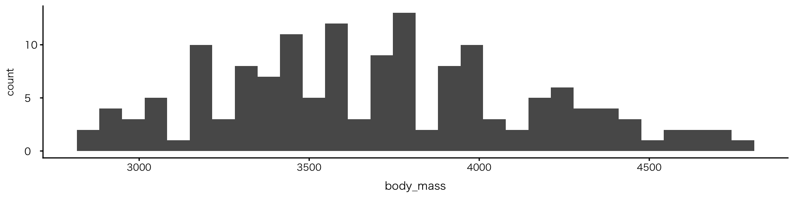
単変数：連続値 > ヒストグラム
ビン区間を引数binwidthで指定
penguins |>
drop_na(body_mass) |>
filter(species == "Adelie") |>
ggplot(aes(x = body_mass)) +
geom_histogram(binwidth = 300)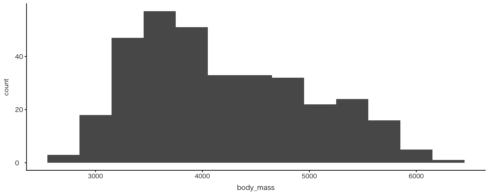
演習：単変量の作図
演習問題⑤
- species以外の変数を使って、棒グラフを作って下さい
データの型をよく確認して、棒グラフに使える変数を選びましょう
03:00
Ⅳ. 二変量（2変数）の作図
2変数：数値 × 数値
散布図
geom_point()- 2つの数値変数の関係（傾向・ばらつき）を可視化
- 読み取りのポイント
- 全体の傾向（右上がり／右下がり）
- ばらつき（点の広がり）
- 外れ値（他と大きく離れた点）
penguins |>
drop_na(bill_len, bill_dep) |>
ggplot(aes(x = bill_len, y = bill_dep)) +
geom_point()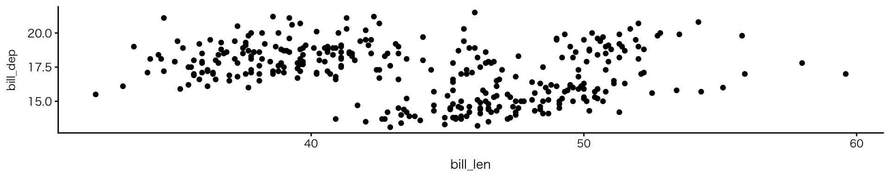
2変数：カテゴリ×カテゴリ
積み上げ棒グラフ
- aes で fill を指定
- 内訳ごとに色分けされて積み上げ表示される
- 表示方法は
geom_bar()のposition引数で変更できる- 3種類：
stack（何も指定しなければstack）;dodge;fill
- 3種類：
- fillは多くのgeom関数で使えるが、表示のされ方は関数で異なる
penguins |>
drop_na(species, island) |>
ggplot(aes(x = island, fill = species)) + # fillを加えただけ
geom_bar() # position = stackがデフォルト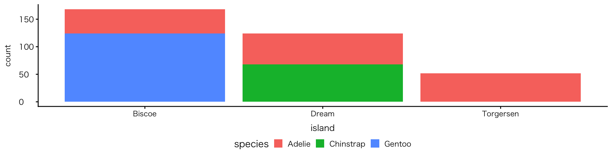
2変数：カテゴリ×カテゴリ
並列棒グラフ
-
geom_bar(position = "dodge")- dodge（避ける、かわすの意）：重なりを避けて横に配置
penguins |>
drop_na(species, island) |>
ggplot(aes(x = island, fill = species)) +
geom_bar(position = "dodge")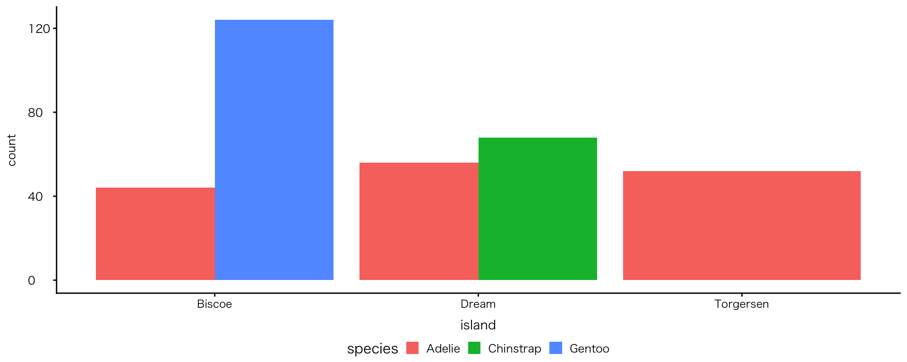
2変数：カテゴリ×カテゴリ
帯グラフ
-
geom_bar(position = "fill")- 各カテゴリの構成比（割合）で表示
penguins |>
drop_na(species, island) |>
ggplot(aes(x = island, fill = species)) +
geom_bar(position = "fill")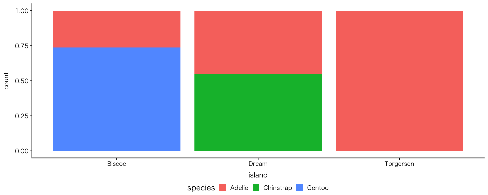
2変数：連続値×カテゴリ
ヒストグラム
-
geom_histogram()- 特別な引数はない
- ggplotに渡す前にグループ分け（
group_by）を行い、facet_wrapで分ける
- 分布状況の確認に加え、グループ間比較が可能
penguins |>
drop_na(body_mass) |>
group_by(species) |>
ggplot(aes(x = body_mass)) +
geom_histogram() +
facet_wrap(~ species)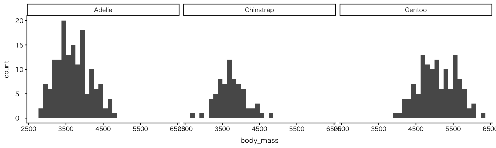
2変数：カテゴリ×数値
棒グラフ
-
geom_col()- カテゴリ別に集計した数値を可視化
- dplyr系の関数（
summarise()など）についての知識を要する - ここでは算出した平均値をプロットした例を示す
penguins |>
drop_na(species, body_mass) |>
group_by(species) |>
summarise(avg_body_mass = mean(body_mass)) |>
ggplot(aes(x = species, y = avg_body_mass)) +
geom_col()| species | avg_body_mass |
|---|---|
| Adelie | 3700.662 |
| Chinstrap | 3733.088 |
| Gentoo | 5076.016 |
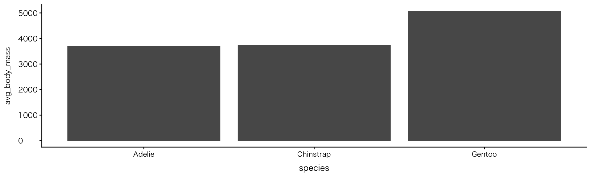
2変数：連続値（または順序） × 数値
折れ線グラフ
-
geom_line()- 推移の可視化 Cf.
geom_bar()：分布の可視化
- 推移の可視化 Cf.
geom_lineで観測数の変化を描く場合、penguinsデータには観測数の列がないため、ggplotに渡す前に計算（count()）する必要あり
penguins |>
count(year) |>
ggplot(aes(x = year, y = n)) +
geom_line()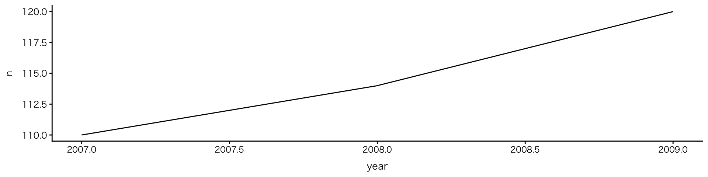
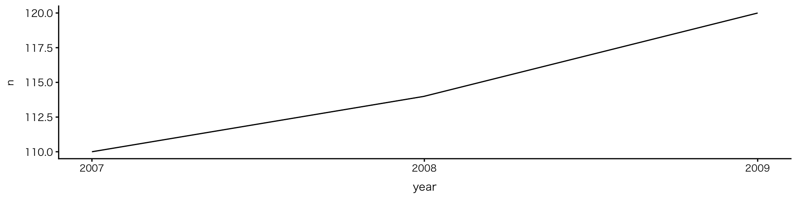
演習：2変数の作図
演習問題⑥
- 箱ひげ図を
geom_boxplot()を使って作図して下さい。どの変数を使ってもよいですが、一つはカテゴリ変数を使ってグループを分けて下さい
ヒント
- カテゴリ変数 × 数値変数の2変数を使います。同種の組み合わせであるヒストグラムのコードが参考になります
- 箱ひげ図では、数値変数をy軸に、カテゴリ変数をx軸にすると分布が比較しやすくなります
応用
- 早く終わった人は、完成したコードに
geom_jitter()を追加し、データの見え方がどう変わるか確認しましょう（完成イメージは次ページ）
演習：二変数の作図
完成イメージ
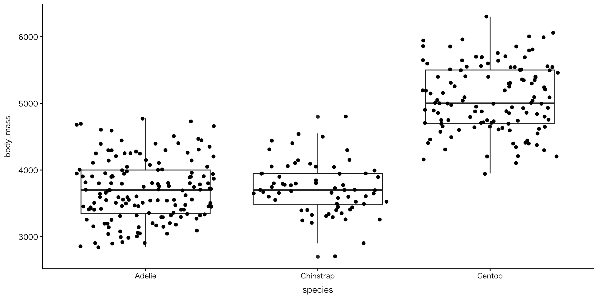
Ⅴ. 多変量（3変数）の作図
多変量
多変量（3変数以上）
- 複数の変数を加えることで情報量が増える
- ➡︎ 関係や違い、各変数の特徴が見えやすくなり、新たな疑問や仮説が生まれる
- ggplotによる多変量の可視化
- 色で区別する：colour（点・線）、fill（面）
- 図を分ける：facet
- Cf. 重回帰分析
この段階になると決まりごとは少なくなります。何をどのように見せたいのかを考えて、適切な方法（色・分割など）を選ぶことが大切です。同じデータでも、見せ方によって伝わり方が大きく変わることを覚えておきましょう。
2変数：数値 × 数値
色で区別する：colour（点）の例
-
geom_point()にcolourを追加
penguins |>
drop_na(bill_len, bill_dep, species) |>
ggplot(aes(x = bill_len, y = bill_dep, colour = species)) +
geom_point()
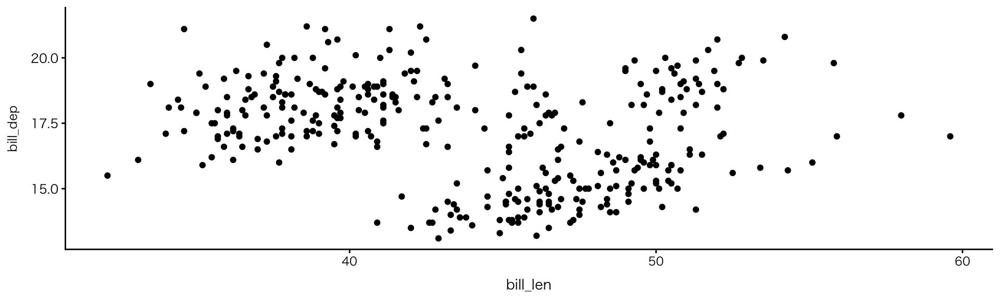
- 種ごとに分布のかたまりがあり、くちばしの形に違いが見られる
多変量：連続値（または順序） × 数値 × カテゴリ
色で区別する：fill（面）の例
-
geom_histogram()にfillを追加
penguins |>
drop_na(body_mass, island, species) |>
group_by(species, island) |>
ggplot(aes(x = body_mass, fill = island)) +
geom_histogram()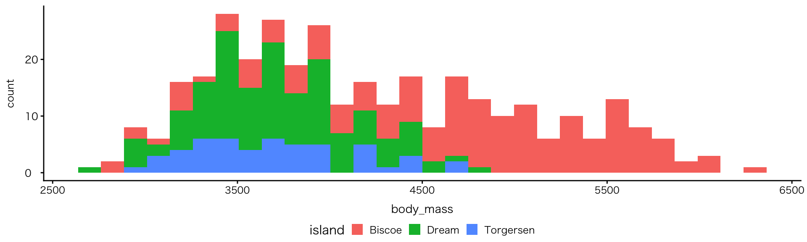

- 種と体重の関係が明確に
多変量：連続値（または順序） × 数値 × カテゴリ
図を分ける：facetの例
-
geom_histogramにfacetを追加
penguins |>
drop_na(body_mass, island, species) |>
group_by(species, island) |>
ggplot(aes(x = body_mass, fill = island)) +
geom_histogram() +
facet_wrap(~ species)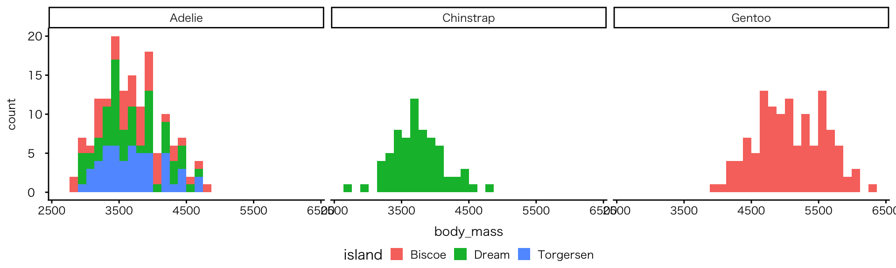

- 種と体重の関係が明確に
多変量：連続値（または順序） × 数値 × カテゴリ
色で区別する：colour（線）の例
-
geom_line()にcolourを追加
penguins |>
count(year, species) |>
ggplot(aes(x = year, y = n, colour = species)) +
geom_line()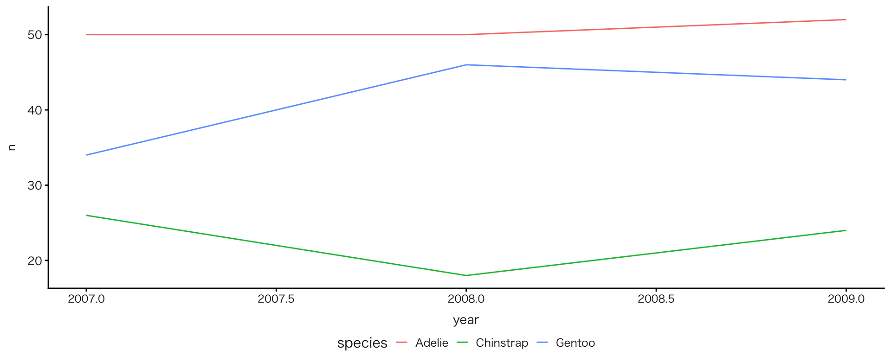
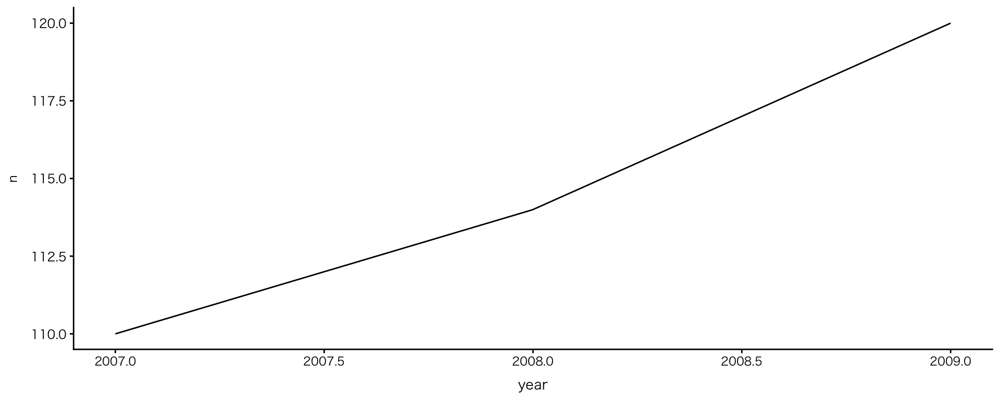
- Adelieの観測数は増えていないことが明らかに
- 2008年に見られる変化は実際の個体数の変化？それとも観測方法などの影響？（問いの浮上）
演習：多変量の作図
演習問題⑦
- penguinsのデータセットを使い、3つの変数を使った図を作って下さい（サンプルコードの書き写しはダメです）
- 作成する図（関数）や使用する変数は自由です
- 多変量の図を作図することで新たにわかったことを箇条書きして下さい
色（colour）、大きさ（size）、図の分割（facet）などを活用してみましょう
15:00
発展的理解
- facet_gridを使うとさらに変数を加え、情報量を足せる
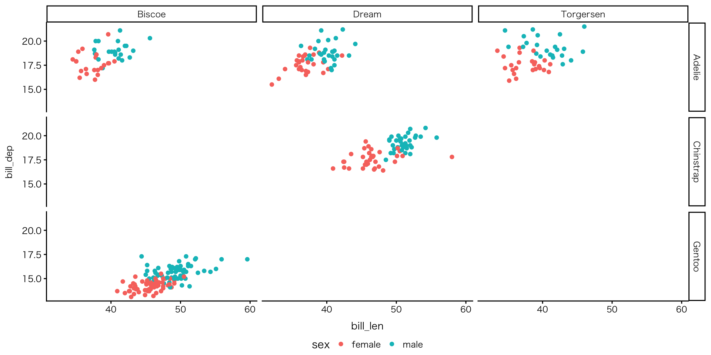
発展的理解
複雑な相関関係・因果関係
- 多変量の図を作ることは、現実の複雑な関係を一度に見ることにつながります。例えば、実際の社会現象（犯罪率、健康、教育など）は、一つ、二つの変数では説明できません
例：アメリカの犯罪率
- 人種・年齢・学歴・所得・地域など、複数の要因が関係していると考えられます。そしてこれらの変数のうちには、共変関係にあるものもあります。多変量の可視化は、そのような変数同士の関係を見える形で捉えるためのものです
発展的理解
殺人率×収入×地域
- 所得と殺人率の関係は地域によって異なり、さらに平均寿命や人口規模とも関連している可能性があり、これら複数の要因を同時に考える必要があることが視覚的に示されている
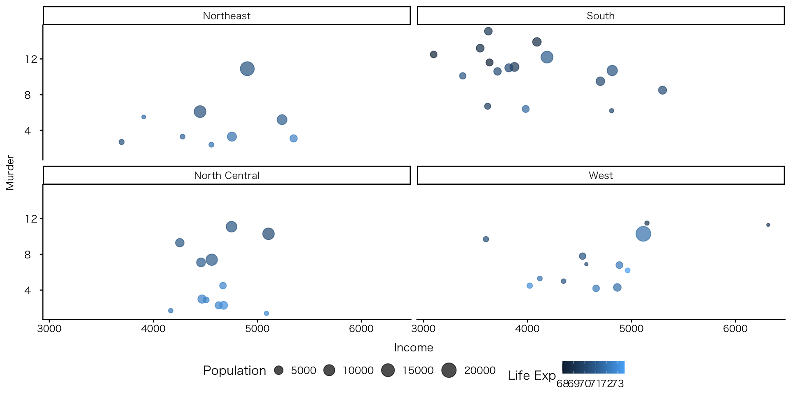
Ⅵ. レポートのためのデータセット探し
レポートのためのデータセット探し
SSDSE（教育用標準データセット）
- 利点：
- 「主要な公的統計を地域別に一覧できる表形式のデータセット」であり、1行目を除外すれば、そのままRで使える
- 多様な変数が用意されており、受講生に多くの選択肢を与える
- Cf. 統計データ分析コンペティション2026
- このデータセットの中からレポートを作成することを推奨しますので、データセットを開き、興味のあるものがないか、次回の授業までに探しておいてください
- このデータセット以外のデータセットを使いたい場合は、個別に相談して下さい
Ⅶ. 次回の授業と宿題
次回の授業と宿題
次回：4月30日（木） 木曜授業日です
Rの基本的な操作方法(2)
- データを読み込む
- 必要なデータを取り出す（不要なデータを削除する）
- 新しい変数を作る
- データを結合する
- カテゴリを整える
1と2については「レポートに使いたいデータセット」が決まっている人はそれを使ってもらいます。決まっていない人は、SSDSEの中から私がデータを選択します（SSDSEに関しては、データ構造がどれも概ね同じなので、後でわからなくなる、などの心配は不要です）
次回の授業と宿題
宿題
- 授業の感想：
- 回答先：Google Forms
- 締め切り：4月24日（金）23時59分
- レポートに使いたいデータセット
- 回答先：Google Forms
- 締め切り：4月30日（木）10時30分
演習：
- 内容：演習④・⑥
- ファイル：演習の該当箇所を抜き出すのではなく、qmdファイルをそのまま提出
- ファイル名：どこかに氏名を特定できる文字を入れて下さい
- 例：inClassExercise_kariya.qmd
- 回答先：dropbox
- 締め切り：4月27日（月）23時59分